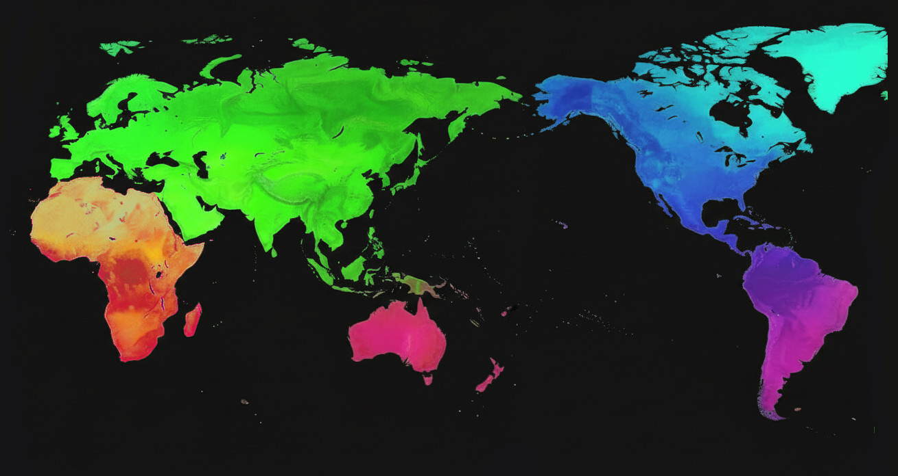

2026-MAY-16
Conoce más sobre el mundo de la construcción civil, arquitectura y tecnologías de diseño
--
Fig. 1: Render panoramico.
--
¿Qué hace un Constructor Civil en Argentina?
El Constructor Civil (o Ingeniero Constructor, según la univesidad o institución educativa, y/o país) es un profesional titulado especializado en la planificación, diseño, gestión y ejecución de proyectos de construcción. Con una formación que combina conocimientos técnicos y administrativos, con habilitación legal para diseñar, dirigir y construir viviendas, edificios e infraestructuras, dentro de su marco legal y normativa vigente.
¿Dónde se estudia?
La carrera se imparte en universidades e institutos técnicos, con una duración de 4 a 5 años. Un ejemplo es la Carrera de Constructor en la FCEFyN, en la Escuela de Ingeniería Civil de la Universidad Nacional de Córdoba, Argentina.
--
Un SIG (o GIS por sus siglas en inglés, Geographic Information System) es un sistema informático que integra hardware, software, datos geográficos y personas para capturar, almacenar, analizar y representar todo tipo de información relacionada con ubicaciones en la Tierra.
¿Dónde se estudia?
La formación en SIG/GIS se puede obtener a través de carreras universitarias como Geografía, Ingeniería Geomática, Topografía o Ingeniería Civil, así como a través de posgrados, maestrías y cursos especializados. Instituciones como la Universidad Nacional de La Plata, la Universidad de Buenos Aires y la Universidad Nacional de Córdoba ofrecen programas relacionados en Argentina.
